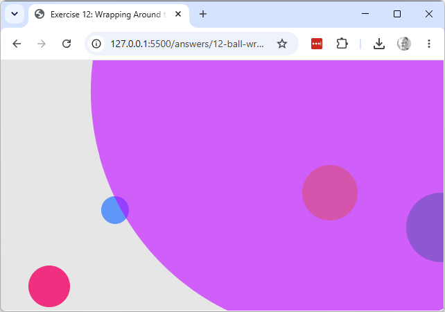

12 — Wrapping Around the Edges
Explore & modify
Working copy: exercises/12-ball-wrap/.
- A ball whose
diameteris larger thanwidthwraps in a way that looks wrong (part of it seems to "teleport"). Predict what happens, then try it, to see the edge case sketch 13 handles differently.

- Apply the wrap formula to
xonly, leavingyas plain+=. Run it with balls that have non-zerovyand explain what you see.